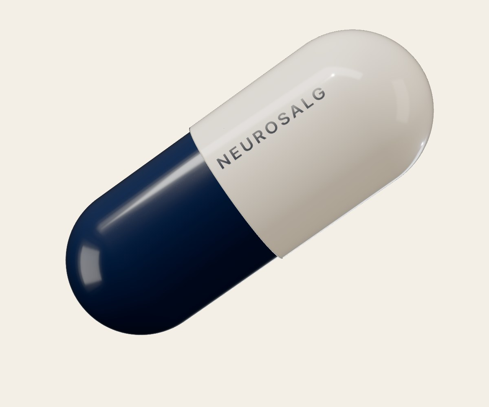
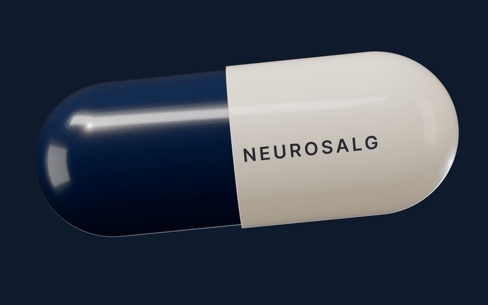
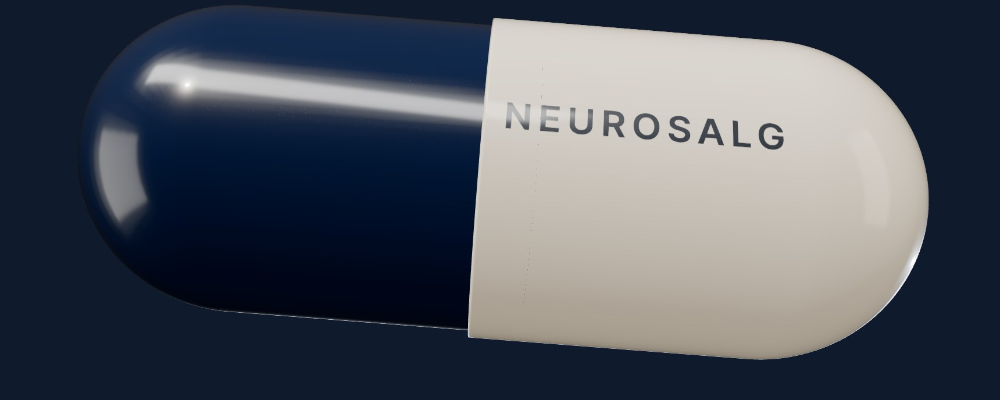

Neurosalg · online salgstræning med Lasse Birk
Den eneste salgspille, der virker.
Den skal bare tages hver mandag kl. 15.
Masterclass, live-træning med mig hver mandag og 529 andre sælgere. Er du ikke tilfreds inden for 14 dage, får du pengene tilbage.

Indlægsseddel: Information til brugeren
Neurosalg 1 kapsel om ugen
Læs denne indlægsseddel grundigt, før du begynder at tage Neurosalg. Gem den. Du får måske brug for at læse den igen.
Virkning og anvendelse
Neurosalg lærer dig at påvirke kundens beslutning, uden at presse. Du lærer NEO-metoden: enkle teknikker, der får kunden til at tale og uddybe, så kunden føler sig set, hørt og forstået. Så køber kunden af sig selv.
Til sælgere, rådgivere og selvstændige, der vil blive bedre til salg på egen hånd. Skal hele salgsteamet trænes, er fysisk salgstræning den rigtige dosis.
“Tillid opstår ikke af argumenter, men af oplevelsen af at blive set, hørt og forstået.”Lasse Birk

Neurosalg indeholder
- Masterclass10 videomoduler, ca. 3 timer i alt.
- Live-træningHver mandag kl. 15-16 med mig. Du tager dine egne kunder med.
- OptagelserAlle mandagstræninger ligger klar bagefter.
- Community529 sælgere på Skool.
- LivstidsadgangDu betaler 1 gang.
Før du tager Neurosalg
Neurosalg virker ikke, hvis du køber den og aldrig tager den.
Det gør mange. De køber med de bedste intentioner, og så føles det, som om de allerede har gjort noget. De får aldrig set masterclassen.
Dem, der møder op hver mandag, hjælper jeg uge efter uge. De taler direkte med mig, og jeg siger, hvad de skal gøre. En time alene med mig koster normalt 10.000 kr. Mandagstræningen følger med.

Sådan skal du tage Neurosalg
Dosis: 1 gang om ugen. Mandag kl. 15-16, live med mig. Kan du ikke den dag, ligger optagelsen klar bagefter.
- Uge 1Live 15:00ManTirOnsTorFre
- Uge 2Live 15:00ManTirOnsTorFre
- Uge 3Live 15:00ManTirOnsTorFre
- Uge 4Live 15:00ManTirOnsTorFre
De første 30 dage
- Du ved fra A til Z, hvordan du booker et møde struktureret.
- Du har en struktur til dine salgsmøder, der virker, når du træner den.
- Du har haft 4 timers live-træning med mig, hvis du er med alle mandage.
- Går du virkelig til den, har du også set hele masterclassen og op til 20 timers optagede træninger.
Bivirkninger
Alle metoder, der virker, kan give bivirkninger. Ikke alle får dem.
- Meget almindelige
- Du taler mindre, og kunden taler mere. Du stiller et spørgsmål mere, før du forklarer.
- Almindelige
- Du booker de møder, du skal bruge, med færre opkald. Kunder, der plejede at holde op med at svare, svarer, fordi I aftalte næste skridt i mødet.
- Sjældne
- Du får så travlt, at du ikke har tid til mandagstræningen længere.
Indberettede bivirkninger
- 3x
“Siden jeg startede på Neurosalg, har jeg tredoblet antallet af nye SaaS B2B-kunder og blev topsælger i virksomheden inden for 1,5 år.”
Jonas Menke, Account Executive, Mercell - 85.000 kr.
“Jeg solgte for 85.000 kr. på 1 opkald, som ingen havde kunnet lukke i 2 år.”
Bjarne Weber, Salgschef, Granzow A/S - 7 mdr.
“I marts lavede jeg mere omsætning end de foregående 7 måneder tilsammen.”
Andreas Kimman, Salgskonsulent, Best One A/S - 100.000 kr.
“Jeg har den bedste lukkeprocent og ligger konsekvent på en omsætning omkring 100.000 kr. om ugen.”
Oliver Ziersen, Forsikringsrådgiver, GF Forsikring - September
“Årsmålet var nået allerede i september.”
Søren Øglend, Erhvervsassurandør, If
Læs alle anmeldelser på Trustpilot (4,6 af 5).
Opbevaring
Livstidsadgang. Optagelserne ligger klar, hvis du misser en mandag. Opbevares utilgængeligt for konkurrenter.
Pakningsstørrelse og pris
9.200 kr.ekskl. moms · 1 pakning · du betaler 1 gang
Tag pillenEr du ikke tilfreds inden for 14 dage, får du pengene tilbage. Salgstræning kan som regel trækkes fra i virksomheden.

Fremstillet af Lasse Birk. 20+ år i salg, 600+ virksomheder trænet og 4,6 på Trustpilot. Om mig
Spørg din salgstræner
Hvornår er live-træningen?
Hver mandag kl. 15-16. Kan du ikke være med, ligger optagelsen klar bagefter.
Hvor længe har jeg adgang?
Hele livet. Du betaler kun 1 gang.
Kan det trækkes fra?
Salgstræning kan som regel trækkes fra i virksomheden. Tal med din revisor eller bogholder.
Hvad hvis jeg ikke er tilfreds?
Så får du pengene tilbage inden for 14 dage. Skriv til lasse@birkneo.com. Vilkårene står i handelsbetingelserne.
Skal hele teamet trænes?
Så passer fysisk salgstræning for salgsteams bedre. Se forløbet.
